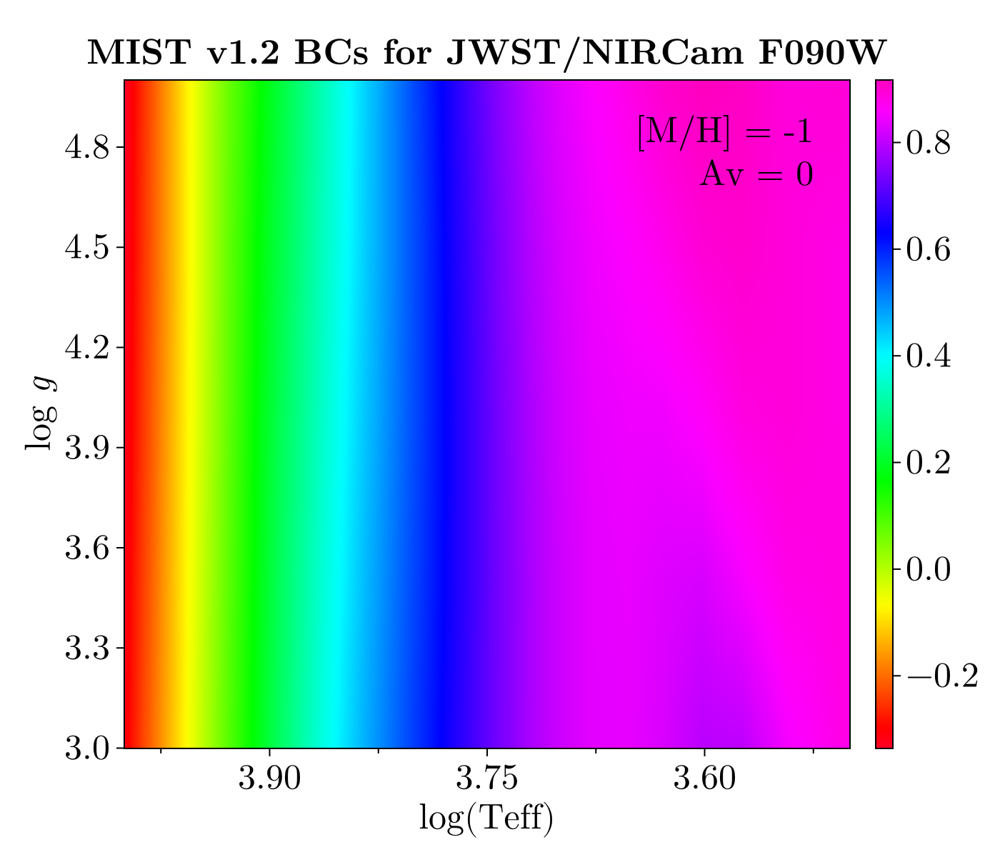

MIST v1.2
The MIST v1.2 BC grid covers a wide range of photometric filters and spans the full range of effective temperature, surface gravity, and metallicity relevant for most stellar evolution applications. The following figure shows a projection of a small portion of the BC table for one choice of metallicity and V-band extinction.

Chemistry
The MIST v1.2 BC grid assumes scaled-solar metal abundance ratios using the protostellar solar abundances of Asplund et al. (2009), so [M/H] is equivalent to [Fe/H]. We provide BolometricCorrections.MIST.MISTv1Chemistry to access information on the v1.2 chemical mixture following the chemical mixture API. MISTChemistry is provided as a deprecated alias for people transitioning from earlier versions of BolometricCorrections.jl prior to the addition of MIST v2.5.
BolometricCorrections.MIST.MISTv1Chemistry — Type
MISTv1Chemistry()Returns a singleton struct representing the MIST v1.2 chemical mixture model. MIST v1.2 assumes the protostellar Asplund et al. (2009) solar abundances. Sum of protostellar hydrogen, helium, metal mass fractions from last row of Table 4 sums to 0.9999, not 1 as it should. To keep calculations consistent, the protostellar values are normalized to sum to 1 here.
julia> using BolometricCorrections.MIST: MISTv1Chemistry, X, Y, Z, X_phot, Y_phot, Z_phot,
MH;
julia> chem = MISTv1Chemistry();
julia> X(chem) + Y(chem) + Z(chem) ≈ 1 # solar protostellar values
true
julia> X_phot(chem) + Y_phot(chem) + Z_phot(chem) ≈ 1 # solar photospheric values
true
julia> MH(chem, Z(chem) * 0.1) ≈ -1.0189881255814277
true
julia> Z(chem, -1.0189881255814277) ≈ Z(chem) * 0.1
trueThe full range of dependent variables covered by this grid is given in the table below.
| min | max | |
|---|---|---|
| Teff | 2,500 K | 1,000,000 K |
| logg | −4.0 | 9.5 |
| [Fe/H] | −4.0 dex | +0.75 dex |
| Av | 0.0 mag | 6.0 mag |
| Rv | 3.1 | 3.1 |
The full grid of unique values for the dependent variables is available in BolometricCorrections.MIST.gridinfov1.
keys(BolometricCorrections.MIST.gridinfov1)(:Teff, :logg, :feh, :Av, :Rv)Types
BolometricCorrections.MIST.MISTv1BCGrid — Type
MISTv1BCGrid(grid::AbstractString)Load and return the MIST v1.2 bolometric corrections for the given photometric system grid. This type is used to create instances of MISTv1BCTable with fixed dependent grid variables ([Fe/H], Av). Call an instance with (feh, Av) or use the MISTv1BCTable constructor directly.
julia> grid = MISTv1BCGrid("JWST")
MIST v1.2 bolometric correction grid for photometric system MIST_JWST
julia> grid(-1.01, 0.11) # Can be called to construct table with interpolated [Fe/H], Av
MIST v1.2 bolometric correction table with [Fe/H] -1.01 and V-band extinction 0.11The constructor for MISTv1BCGrid includes a parser to translate most human-readable photometric system names (e.g., "HST/ACS-WFC") into their proper internal identifiers. The full list of internal specifiers is given below.
show(stdout, "text/plain", filter(x -> occursin("MIST", x) & !occursin("2.5", x), keys(DataDeps.registry)))Set{String} with 24 elements:
"MIST_LSST"
"MIST_HST_ACS_HRC"
"MIST_WISE"
"MIST_HST_WFPC2"
"MIST_JWST"
"MIST_Washington"
"MIST_Swift"
"MIST_PanSTARRS"
"MIST_SkyMapper"
"MIST_CFHT_MegaCam"
"MIST_UVIT"
"MIST_UKIDSS"
"MIST_VISTA"
"MIST_UBVRIplus"
"MIST_HSC"
"MIST_HST_ACS_WFC"
"MIST_Spitzer"
"MIST_SDSS"
"MIST_GALEX"
"MIST_HST_WFC3"
"MIST_SPLUS"
"MIST_IPHAS"
"MIST_WFIRST"
"MIST_DECam"Each photometric system uses a separate data file. The first time you request a BC grid for a system you have not yet downloaded, you will be prompted to allow the download. Once a grid is constructed for a particular photometric system, a BC table with fixed [Fe/H] and $A_V$ can be interpolated.
BolometricCorrections.MIST.MISTv1BCTable — Type
MISTv1BCTableA MIST v1.2 bolometric correction table with fixed [Fe/H] and V-band extinction Av. Callable with arguments (Teff [K], logg [cgs]) to interpolate BCs.
Deprecated aliases
MISTBCGrid and MISTBCTable are deprecated aliases for MISTv1BCGrid and MISTv1BCTable, respectively, provided for backwards compatibility. They forward all arguments to the v1 constructors and emit a deprecation warning if Julia is configured to show them (e.g., Julia started as julia --depwarn=yes).
Photometric Zeropoints
The MIST v1.2 bolometric corrections adopt a solar bolometric magnitude of $M_{\odot,\text{bol}} = 4.74$ and a solar bolometric luminosity of $L_\odot = 3.828 \times 10^{33}$ erg s⁻¹. Information needed to convert between the AB, Vega, and ST photometric systems is contained in BolometricCorrections.MIST.zpt (documented on the MIST overview page).
MIST v1.2 References
This page cites the following references:
- Asplund, M.; Grevesse, N.; Sauval, A. J. and Scott, P. (2009). The Chemical Composition of the Sun. Annual Review of Astronomy and Astrophysics 47, 481–522.